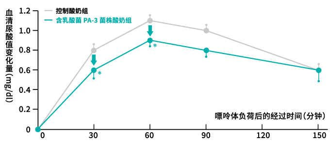
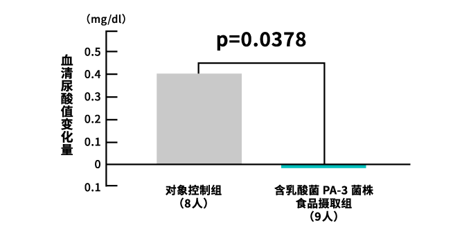

乳酸菌PA-3株 实验结果
含有乳酸菌PA-3株的酸奶可抑制餐后血清尿酸值的上升
本实验将14名健康男性分为2组，由摄取含有乳酸菌PA-3株的酸奶组和摄取不含乳酸菌PA-3株的酸奶组实施。与酸奶一起同时摄入嘌呤，比较摄取后30分钟、60分钟、90分钟和150分钟后的血清尿酸值。
结果表明，摄取含乳酸菌PA-3株的酸奶组与摄取不含乳酸菌PA-3株的酸奶组相比，餐后血清尿酸值上升得到抑制。
由此证实了乳酸菌PA-3株具有抑制餐后血清尿酸值上升的作用。
|
餐后血清尿酸值的变化量

出典：Gout and Nucleic Acid Metabolism Vol.42 No.1（2018） 对象：健康男性14名 实验方法：将男性实验对象分为2组，一组（PA-3组）摄取嘌呤（498mg）和含乳酸菌PA-3株的酸奶，另一组（安慰剂组）摄取嘌呤（498mg）和不含乳酸菌PA-3株的酸奶，两组同时摄取。摄取后30分钟、60分钟、90分钟和150分钟后分别测定血清尿酸值。实施交叉实验，在2组之间比较测定开始后的尿酸值的变化量（上升量）。*p＜0.05 表明与控制群相比呈显著差异。
|
摄取含乳酸菌PA-3株的酸奶8周，可抑制血清尿酸值的上升
本实验是由东京女子医科大学的山中教授，以高尿酸血症及痛风患者（服药治疗中）为对象实施的，实验期间暂时中断17名对象的服药，将他们分为摄取含乳酸菌PA-3株的酸奶组和摄取不含乳酸菌PA-3株的酸奶组，经8周摄取（1天2瓶[100g/瓶]）后对血清尿酸值的变化量进行了比较。
结果表明，摄取含乳酸菌PA-3株的酸奶组与摄取不含乳酸菌PA-3株的酸奶组相比，血清尿酸值的上升得到抑制。
|
摄取8周后血清尿酸值的变化量

以高尿酸血症及痛风患者（服药治疗中）为对象。暂时停止服药，将他们分为摄取含乳酸菌PA-3株的酸奶组和摄取不含乳酸菌PA-3株的酸奶组两组，比较8周摄取（1天2瓶 [100g/瓶]）后的血清尿酸值的变化量。根据实验开始时除去血清尿酸值明显偏离平均值者的总体（17人）进行分析（p＜0.05呈明显差异）。
根据Yamanaka H et al., Modern Rheumatology, 29:146, 2019改编
|